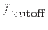

| Parameter | Mand | Type | Default | Constraints |
| weights | yes | real | |  weights weights |
This list of real values contains the information about the spectrum of the source. They correspond to the  values in equation 2. They need not be normalized however: the task will do this itself. At least one of the values in the list must be greater than zero. Note that these values represent the detected spectrum of the source; that is, is the total number of detected counts within energy band values in equation 2. They need not be normalized however: the task will do this itself. At least one of the values in the list must be greater than zero. Note that these values represent the detected spectrum of the source; that is, is the total number of detected counts within energy band  during a given exposure time, on the optic axis, assuming no chip gaps or bad pixels under the PSF. during a given exposure time, on the optic axis, assuming no chip gaps or bad pixels under the PSF.
|
| boxbkgmapsets | yes | dataset | | |
A list of input images, one per energy band. These images are made by esensitivity
calling asmooth. They are formed by convolving the background maps with the square detection box.
|
| psfexpmapsets | yes | dataset | | |
A list of input images, one per energy band. These images are made by esensitivity
calling econvolverprep
followed by asmooth. They are formed by truncating the normalized PSF within the detection box and convolving the exposure maps with the result. Thus these images are in units of seconds and in some sense represent the exposure `seen' within the sliding source-detection box.
|
| expmapsets | yes | dataset | | |
A list of exposure maps. These were utilized in a previous version of the task but appear to serve little function in the present version. In future I'll probably remove them.
|
| sensmapsets | yes | dataset | | |
The output sensitivity maps, one per energy band. These are in units of counts .
|
| likemin | yes | real | |  likemin likemin |
The same cutoff value of detection likelihood
 which was supplied to the parameter of the same name of eboxdetect.
|
| Parameter | Mand | Type | Default | Constraints |